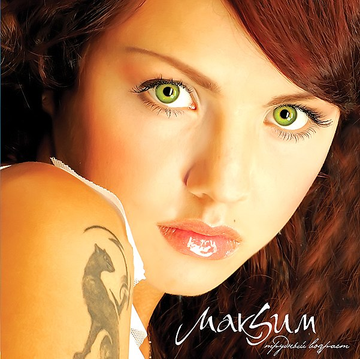
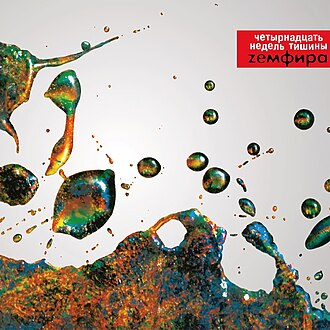
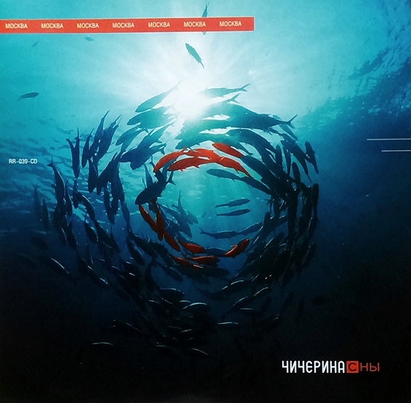
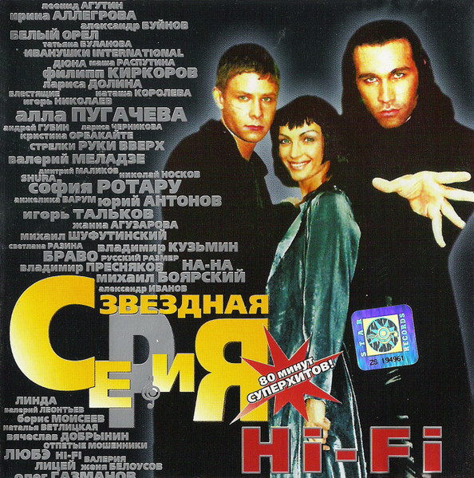

АРТИСТЫ
Все артисты →

МакSим
Поп, Европоп
45 треков · 95.8K прослушиваний
Глюк'oZa
Поп, Электроника
38 треков · 82.1K прослушиваний

Би-2
Рок, Альтернатива
150 треков · 185.3K прослушиваний

Zемфира
Рок, Поп-рок
98 треков · 162.9K прослушиваний

Дискотека Авария
Дэнс-поп, Евроденс
62 трека · 110.5K прослушиваний

t.A.T.u.
Поп, Европоп
40 треков · 145.4K прослушиваний

Гости из будущего
Дрим-поп, Европоп
70 треков · 105.1K прослушиваний
ЕЩЁ ИЗ 2000-Х

Звери
Поп-рок, Рок
85 треков · 122.7K прослушиваний

Чичерина
Поп-рок, Альтернатива
42 трека · 68.4K прослушиваний

Hi-Fi
Дэнс-поп, Европоп
50 треков · 90.3K прослушиваний

REFLEX
Европоп, Танцевальная
65 треков · 88.9K прослушиваний